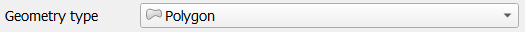
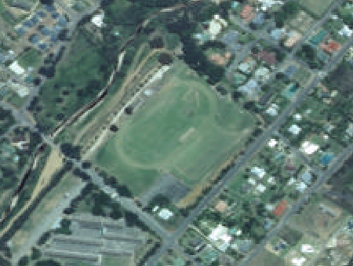
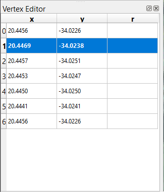
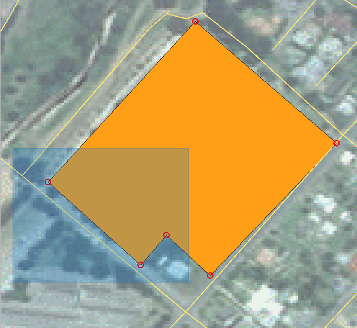

The data that you use has to come from somewhere. For most common applications,
the data exists already; but the more particular and specialized the project,
the less likely it is that the data will already be available. In such cases,
you’ll need to create your own new data.
The goal for this lesson: To create a new vector dataset.
5.1.1. ★☆☆ Follow Along: The Layer Creation Dialog
Before you can add new vector data, you need a vector dataset to add it to. In
our case, you’ll begin by creating new data entirely, rather than editing an
existing dataset. Therefore, you’ll need to define your own new dataset first.
Open QGIS and create a new blank project.
Navigate to and click on the menu entry
Layer ► Create Layer ► New Shapefile Layer.
You’ll be presented with the New Shapefile Layer dialog, which will
allow you to define a new layer.
Click … for the File name field.
A save dialog will appear.
Navigate to the exercise_data directory.
Save your new layer as school_property.shp.
It’s important to decide which kind of dataset you want at this stage. Each
different vector layer type is “built differently” in the background, so once
you’ve created the layer, you can’t change its type.
For the next exercise, we’re going to create new features which describe
areas. For such features, you’ll need to create a polygon dataset.
For Geometry Type, select Polygon from the drop down menu:

This has no impact on the rest of the dialog, but it will cause the correct
type of geometry to be used when the vector dataset is created.
The next field allows you to specify the Coordinate Reference System,
or CRS. CRS is a method of associating numerical coordinates with a
position on the surface of the Earth.
See the User Manual on Working with Projections
to learn more.
For this example we will use the default CRS associated with this
project, which is WGS84.
Next there is a collection of fields grouped under New Field.
By default, a new layer has only one attribute, the id field (which you
should see in the Fields list) below. However, in order for the
data you create to be useful, you actually need to say something about the
features you’ll be creating in this new layer. For our current purposes, it
will be enough to add one field called name that will hold Textdata
and will be limited to text length of 80 characters.
Replicate the setup below, then click the Add to Fields List button:
When you create new data, it obviously has to be about objects that really
exist on the ground. Therefore, you’ll need to get your information from
somewhere.
There are many different ways to obtain data about objects. For example, you
could use a GPS to capture points in the real world, then import the data into
QGIS afterwards. Or you could survey points using a theodolite, and enter the
coordinates manually to create new features. Or you could use the digitizing
process to trace objects from remote sensing data, such as satellite imagery
or aerial photography.
For our example, you’ll be using the digitizing approach. Sample raster datasets
are provided, so you’ll need to import them as necessary.
Click on Data Source Manager button.
Select Raster on the left side.
In the Source panel, click on the … button:
Navigate to exercise_data/raster/.
Select the file 3420C_2010_327_RGB_LATLNG.tif.
Click Open to close the dialogue window.
Click Add and Close. An image will load into your map.
If you don’t see an aerial image appear, select the new layer, right click,
and choose Zoom to Layer in the context menu.
Click on the Zoom In button, and zoom to the area highlighted in blue below:
Now you are ready to digitize these three fields:
Before starting to digitize, let’s move the school_property layer above the aerial image.
Select school_property layer in the Layers pane and drag it to the top.
In order to begin digitizing, you’ll need to enter edit mode. GIS software
commonly requires this to prevent you from accidentally editing or deleting
important data. Edit mode is switched on or off individually for each layer.
To enter edit mode for the school_property layer:
Click on the school_property layer in the Layers panel to select it.
Click on the Toggle Editing button.
If you can’t find this button, check that the Digitizing toolbar is
enabled. There should be a check mark next to the View ►
Toolbars ► Digitizing menu entry.
As soon as you are in edit mode, you’ll see that some digitizing tools have become
active:
Capture Polygon
Vertex Tool
Other relevant buttons are still inactive, but will become active when
we start interacting with our new data.
Notice that the layer school_property in the Layers panel now
has the pencil icon, indicating that it is in edit mode.
Click on the Capture Polygon button to begin digitizing
our school fields.
You’ll notice that your mouse cursor has become a crosshair. This allows you to
more accurately place the points you’ll be digitizing. Remember that even when
you’re using the digitizing tool, you can zoom in and out on your map by
rolling the mouse wheel, and you can pan around by holding down the mouse wheel
and dragging around in the map.
The first feature you’ll be digitizing is the athletics field:

Start digitizing by clicking on a point somewhere along the edge of the field.
Place more points by clicking further along the edge, until the shape you’re
drawing completely covers the field.
After placing your last point, right click to finish drawing the polygon.
This will finalize the feature and show you the Attributes dialog.
Fill in the values as below:
Click OK, and you have created a new feature!
In the Layers panel select the school_property layer.
Right click and choose Open Attribute Table in the context menu.
In the table you will see the feature you just added.
While in edit mode you can update the attributes data by double click on the cell
you want to update.
Close the attribute table.
To save the new feature we just created, click on Save Edits button.
Remember, if you’ve made a mistake while digitizing a feature, you can always
edit it after you’re done creating it. If you’ve made a mistake, continue
digitizing until you’re done creating the feature as above. Then:
Click on Vertex Tool button.
Hover the mouse over a vertex you want to move and left click on the vertex.
Move the mouse to the correct location of the vertex, and left click.
This will move the vertex to the new location.
The same procedure can be used to move a line segment, but you will need to
hover over the midpoint of the line segment.
If you want to undo a change, you can press the Undo button or Ctrl+Z.
Remember to save your changes by clicking the Save Edits button.
When done editing, click the Toggle Editing button
to get out of edit mode.
Digitize the school itself and the upper field. Use this image to assist you:
Remember that each new feature needs to have a unique id value!
Note
When you’re done adding features to a layer, remember to save your
edits and then exit edit mode.
Note
You can style the fill, outline and label placement and formatting
of the school_property using techniques learnt in earlier
lessons.
5.1.4. ★★☆ Follow Along: Using Vertex Editor Table
Another way to edit a feature is to manually enter the actual
coordinate values for each vertex using the Vertex Editor
table.
Make sure you are in edit mode on layer school_property.
If not already activated, click on Vertex Tool button.
Move the mouse over one of the polygon features you created in the
school_property layer and right click on it.
This will select the feature and a Vertex Editor pane will appear.

Note
This table contains the coordinates for the vertices of the feature.
Notice there are seven vertices for this feature, but only six are
visually identified in the map area.
Upon closer inspection, one will notice that row 0 and 6 have
identical coordinates.
These are the start and end vertices of the feature geometry,
and are required in order to create a closed polygon feature.
Click and drag a box over a vertex, or multiple vertices, of the selected feature.

The selected vertices will change to a color blue and the
Vertex Editor table will have the corresponding rows
highlighted, which contain the coordinates of the vertices.
To update a coordinate, double left click on the cell in the table
that you want to edit and enter the updated value.
In this example, the x coordinate of row 4 is updated from
20.4450 to 20.4444.
After entering the updated value, hit the enter key to apply the change.
You will see the vertex move to the new location in the map window.
When done editing, click the Toggle Editing
button to get out of edit mode, and save your edits.
We are going to digitize two routes which are not already marked on the roads layer;
one is a path, the other is a track.
Our path runs along the southern edge of the suburb of Railton, starting and
ending at marked roads:
Our track is a little further to the south:
If the roads layer is not yet in your map, then add the roads
layer from the GeoPackage file training-data.gpkg included in the
exercise_data folder of the training data you downloaded.
You can read ★☆☆ Follow Along: Loading vector data from a GeoPackage Database for a how-to.
Create a new ESRI Shapefile line dataset called routes.shp in the
exercise_data directory, with attributes id and type
(use the approach above to guide you.)
Activate edit mode on the routes layer.
Since you are working with a line feature, click on the
Add Line button to initiate line
digitizing mode.
One at a time, digitize the path and the track on the routes layer.
Try to follow the routes as accurately as possible, adding additional points along
corners or turns.
Set the type attribute value to path or track.
Use the Layer Properties dialog to add styling to your routes.
Feel free to use different styles for paths and tracks.
Save your edits and toggle off editing mode by pressing the
Toggle Editing button.
Answer
The symbology doesn’t matter, but the results should look more or less like
this:
Now you know how to create features! This course doesn’t cover adding point
features, because that’s not really necessary once you’ve worked with more
complicated features (lines and polygons). It works exactly the same, except
that you only click once where you want the point to be, give it attributes as
usual, and then the feature is created.
Knowing how to digitize is important because it’s a very common activity in GIS
programs.
Features in a GIS layer aren’t just pictures, but objects in space. For
example, adjacent polygons know where they are in relation to one another. This
is called topology. In the next lesson you’ll see an example of why this can
be useful.


 Data Source Manager button.
Data Source Manager button. Raster on the left side.
Raster on the left side.


 Zoom In button, and zoom to the area highlighted in blue below:
Zoom In button, and zoom to the area highlighted in blue below:

 Toggle Editing button.
Toggle Editing button. Capture Polygon
Capture Polygon Vertex Tool
Vertex Tool


 Save Edits button.
Save Edits button.

 Undo button or Ctrl+Z.
Undo button or Ctrl+Z.


 Add Line button to initiate line
digitizing mode.
Add Line button to initiate line
digitizing mode.